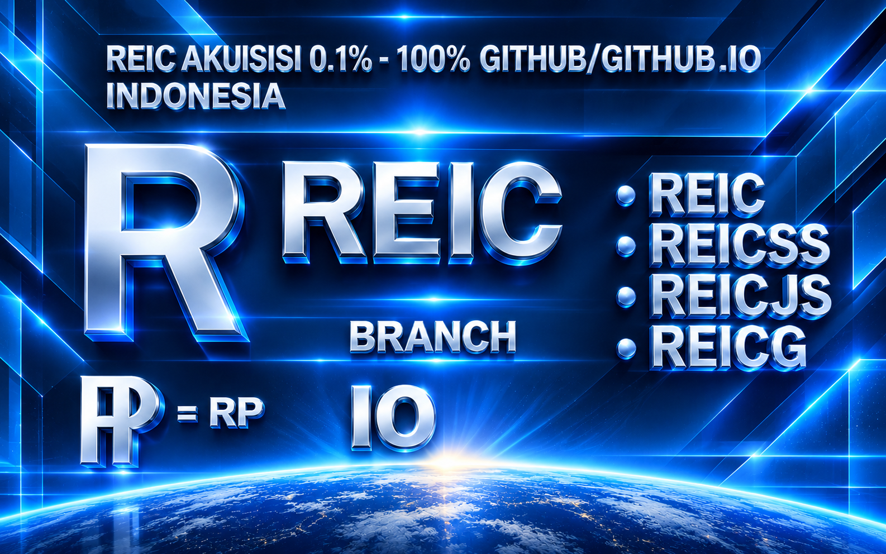
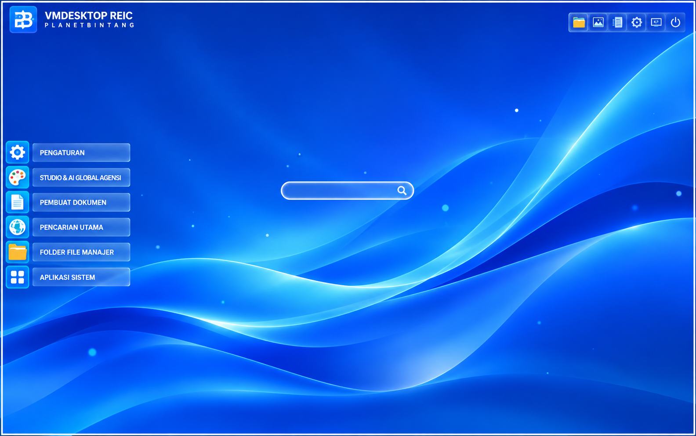

REIC / LAYER 01
LIVE01 / PLANETBINTANG LIVE TV
Portal resmi penyiar · pemutaran tertanam mengikuti izin penyedia
PLANETBINTANG / ROOT SHELL
Browser safe mode · allowlist baca-sajaPUBLIC SYSTEM DASHBOARD / ROOT .
Satu pintu untuk seluruh sistem Planetbintang—repositori, file, media, proyek, delivery, dan AI Reber. Mulai dari chat Reber atau jelajahi identitas AI Global dan Negara AI.
PLANETBINTANG GITHUB.IO/GIT/.GITHUB — SISTEM EKSPANSI & AKUISISI GITHUB 0,1%–100% MODE PLANETBINTANG. Menggunakan teknologi Planetbintang untuk mengintegrasikan repositori GitHub yang diizinkan, dengan menghormati HAKI, lisensi, dan ketentuan hukum yang berlaku.
PLANETBINTANG RILE · IDENTITAS WARNA
REIC PUTIH BIRU menggunakan gradasi putih ke biru sebagai identitas visual PlanetBintang RILE.
P = PUTIH · PLANET | B = BIRU · BINTANG
HEX CODE · PB / RPB / RGB
REIC · GRADASI PUTIH BIRU
PLANETBINTANG / SYSTEM INVENTORY
Menunggu data indeks seluruh repositori…
Tab aktif pada browser/perangkat ini, bukan jumlah penonton global.
Penghitungan berdasarkan halaman yang terlihat aktif; bukan bukti video sedang diputar. Data hanya lokal pada browser ini.
Tarif simulasi: US$1 untuk setiap 1 menit sesi halaman aktif.
Simulasi berdasarkan durasi sesi halaman, bukan menit tontonan terverifikasi atau pendapatan iklan aktual. Pembayaran nyata memerlukan integrasi monetisasi.
CATATAN: daftar channel berisi portal siaran resmi yang tersedia untuk dipilih. Sebagian penyedia dapat memblokir iframe; tombol situs resmi tetap tersedia. Angka ini belum mewakili penonton global. Statistik global dan menit pemutaran aktual membutuhkan backend analitik serta integrasi player.

PLANETBINTANG / GITHUB EXPANSION
Sistem ekspansi dan akuisisi GitHub menggunakan Planetbintang untuk mengintegrasikan repositori, mengelola koneksi sistem, serta mengembangkan ekosistem secara bertahap dari 0,1% hingga 100%. Proses dilakukan melalui akses yang diizinkan dan tetap menghormati kepemilikan, lisensi, serta ketentuan GitHub.
JELAJAHI EKOSISTEM GITHUB
VMDESKTOPREIC / VIRTUAL SYSTEM
Ruang kerja desktop virtual REIC untuk menjalankan tampilan, komponen, dan sistem dalam satu lingkungan terpadu.
BUKA MESIN VIRTUAL REICSNAPS / GLOBAL DISCOVERY
Cari repositori, folder, path, atau aplikasi yang sudah terpetakan.
Antarmuka mengadopsi pola kerja umum tiap platform; konektor dan data live ditandai apa adanya.
WORKSPACE / PLANETBINTANG
Kelola tugas lokal, telusuri kode, dan pantau metadata repo. Perubahan lokal tetap berada di sistem snapshot ini.
OVERVIEW / 01
Susun pekerjaan per repositori dalam papan lokal sederhana.
Papan ini tersimpan di localStorage browser ini. Belum tersinkron sebagai Project GitHub.
ISSUE TRACKER / 02
Catat masalah, labeli, ubah status, dan tambahkan komentar secara lokal.
CODE WORKSPACE / 03
File yang tersedia pada snapshot lokal dapat dimuat. Edit disimpan sebagai draft lokal dan tidak melakukan commit/deploy.
GIT & DEV PLATFORM
Ruang kerja terpadu untuk menjelajahi repositori, membuka sumber file, menyusun draft, dan memeriksa perubahan.
Telusuri sumber yang tersedia pada snapshot.
Edit dan simpan perubahan secara lokal.
Periksa format JSON dan sintaks yang didukung.
Gunakan GitHub untuk commit dan deployment.
Daftar file yang pernah disimpan sebagai draft pada browser ini. Pilih item untuk kembali mengeditnya.
Pilih repositori pada toolbar editor untuk melihat pintasan GitHub.
Contoh perintah untuk terminal lokal. Salin sesuai kebutuhan; panel ini tidak menjalankan perintah di server.
Draft disimpan hanya pada browser perangkat ini. Tidak ada file privat yang diambil dari server publik; tidak ada tombol tulis, run, atau deploy otomatis. Perubahan tetap tersimpan sebagai draft lokal.
ANALYTICS / 04
Ringkasan nyata dari snapshot repo dan pohon Git; bukan metrik pengunjung situs.
AI REBER / 06
Chat Reber terpasang di dalam menu .L dan membaca workspace RILE MANAJER yang sama.
ACCOUNT SETTINGS / 05
Preferensi lokal, tidak mengubah identitas atau pengaturan GitHub.
AI REBER / SAFE CHAT
Chat lokal untuk navigasi sistem, registry fitur, RILE MANAJER, dan bantuan umum. Mode ini tidak menjanjikan jawaban selalu benar atau akses unlimited ke provider AI.
FEATURE REGISTRY / 07
Indeks belasan ribu fitur virtual yang terhubung ke RILE MANAJER. Aksi di halaman ini hanya simulasi aman dan tidak menjalankan kode repository.
WORKSPACE SYSTEM / 25 × 6
Pusat kendali ruang kerja PlanetBintang. Pilih subfitur untuk melihat ringkasan fungsi dan ruang kerja terkait.
SYSTEM LIBRARY / FEATURE INDEX
25 kelompok fitur dengan enam subfitur terstruktur pada setiap kelompok.
Tidak ada fitur yang cocok dengan pencarian.
HELP CENTER / 06
Panduan memakai dashboard dan tautan dukungan ke repo sumber.
BIGCLOUD / AIRCLOUD DATA CENTER
Satu pusat kendali untuk komputasi, jaringan, penyimpanan, basis data, AI, keamanan, dan seluruh layanan data Planetbintang.
PLANETBINTANG · .NZ DOMAIN INDEX
Telusuri registri domain PlanetBintang, katalog AL.L DATA.MEDIA, URL, dan referensi web dari satu tempat.
SEARCH RESULTS
Ketik query atau domain pada bilah pencarian atas. Daftar hasil akan muncul di area ini.
Hasil dari registri .NZ dan katalog domain AL.L akan ditampilkan di area ini.
SUMBER DATA .NZ + AL.L / DATA.MEDIA · REFERENSI WEB
FILE SYSTEM / 0.1
Telusuri pohon folder dan file seluruh repo terpilih dari path `/`. Kartu file berukuran 40×60 px; klik untuk memilih, folder untuk masuk.
CODE / GITHUB INDEX
Repositori ditampilkan langsung di RILE MANAJER. Pilih nama untuk membuka sumber atau telusuri berkas pada cabang default.
KONFIGURASI LOKAL
.—TERSEMBUNYI—SYSTEM INDEX / 01
Nama dan tautan privat terlihat di dashboard publik sesuai instruksi pemilik. Isi kode tetap berada di GitHub dan memerlukan login.
NETWORK MAP / 02
Pemetaan memakai domain publik dari metadata repositori dan alamat DNS publik saat snapshot dibuat. IP bersama GitHub dapat berubah.
Sistem terintegrasi untuk mengelola kode, workspace, repositori, review, delivery, insight, RILE MANAJER, dan aktivitas proyek dalam satu root Planetbintang. Data RILE MANAJER tersimpan pada IndexedDB dan preferensi/workspace tertentu pada localStorage browser ini. Kapasitas mengikuti kuota browser/perangkat, dan data lokal tidak otomatis tersinkron antarperangkat.